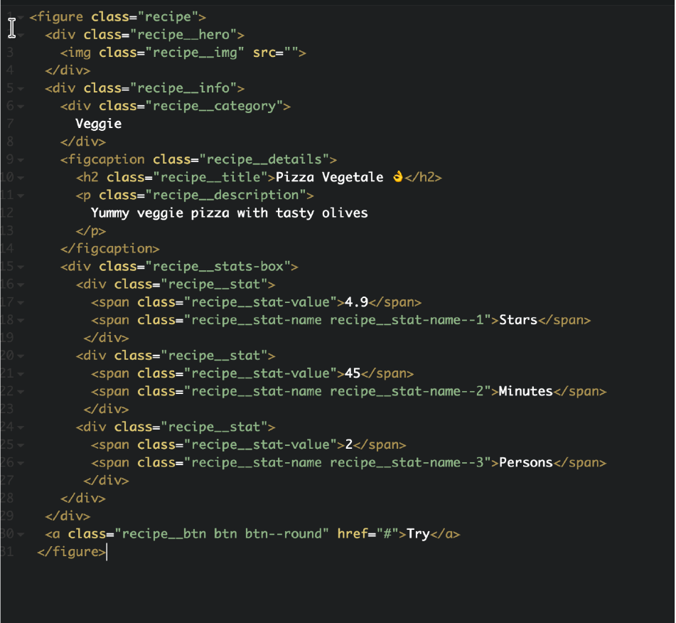

Metodología
Introducción
Cuando tratamos de proyectos grandes y complejos la forma de organizar el código afecta de tres maneras:
- El tiempo que tardas en escribir el código.
- Cuanto código tendrás que escribir
- Cuanta carga al navegador tendrá que hacer.
Hay muchas metodologías para que el CSS sea lo más pequeño posible y permitan la cooperación entre programadores para mantener una gran base de código CSS. Esto es obvio en grandes proyectos como Facebook, GitHub etc pero también en otros proyectos CSS puede crecer muy rápido.
Algunas metodologías:
- OOCSS: Separación de contenedor y contenido con CSS "objetos"
- SMACSS: Guía de estilo para escribir su CSS con cinco categorías
- SUITCSS: Nombres de clase estructurados y guiones significativos
- Atómico: Descomponer estilos en piezas atómicas o indivisibles
De la metodología Atómico, surge lo que se conoce BEM. Que es una abreviatura de Block, Element and Modifier.
BEM
Block
Encapsula una entidad independiente que es significativa por sí misma. Mientras que los bloques se pueden anidar e interactuar entre ellos, semánticamente se mantienen iguales; no hay precedencia o jerarquía. Ejemplos: header, container, menu, checkbox, input, div.
Y el selector: .block{}
Element
Parte de un bloque que no tiene significado por si propio. Cualquier elemento está ligado a su bloque.Ejemploss:menu item, list item, checkbox caption, header ,title
Y el selector: .block__element{}
Modifier.
Es una diferente versión de bloque o elemento. Ejemplos: disabled, highlighted, checked, fixed, size big,color yellow
Y el selector:.block--element{}
Qué es lo que aporta la nueva codificación de nombres:
- Modularidad: Los bloques no dependerán de otros elementos de la página. No tendremos problemas con el concepto en cascada.
- Reutilización: Si tenemos bloques independientes, reutilizarlos de manera inteligente, reduce el código CSS que tendremos que mantener.
- Estructura: Esta metodología nos aporta al código simpleza y fácil entendimiento.
En bloque podemos incluir variables específicas de componentes, placeholders e incluso mixins y funciones( que veremos en la siguiente sección). Ten en cuenta, sin embargo, que debes evitar referenciar (es decir, @import-ar) archivos de componentes de otros archivos de componentes, ya que esto puede hacer que la dependencia dentro de tu proyecto sea un completo lío.
Ejemplo

¿Busca los elementos, bloques y modificadores?. Para atención en el último a.
Arquitectura
Uno de los principales beneficios de utilizar un preprocesador CSS es tener la capacidad de dividir el código en varios archivos sin afectar al rendimiento (como haría la directiva @import en CSS). Gracias a la directiva @import de Sass, es perfectamente seguro (y de hecho recomendable) usar tantos archivos como sean necesarios en el desarrollo, complicándolo todo en una sola hoja de estilo cuando vaya a producción.
Se suele trabajar con un patrón llamado “patrón 7-1”. 7 carpetas y un archivo. Almacenamos en 7 carpetas diferentes todos lo componentes y un archivo en el raíz (normalmente llamado main.css) que importa todas estas partes.
base/
components/
layout/
pages/
themes/
abstracts/
vendors/
Carpeta Base
Esta contiene lo que podríamos llamar la plantilla del proyecto. Podemos encontrar el archivo reset para reiniciar los estilos CSS, algunas reglas tipográficas y probablemente un archivo CSS que define algunos estilos estándares para los elementos HTML más comunes .
_base.scss
_reset.scss
_typography.scss
Carpeta layout
Contiene todo lo que tiene que ver con la distribución del sitio o la aplicación. Esta carpeta puede contener hojas de estilo para las partes principales del sitio (header,footer, navigation, sidebar...), el sistema de retícula o incluso el estilo CSS para los formularios.
_grid.scss
_header.scss
_footer.scss
_sidebar.scss
_forms.scss
_navigation.scss
Carpeta Componentes o bloques.
Para componentes más pequeños, existe la carpeta components/. Contiene todo tipo de módulos específicos como por ejemplo, un slider, un loader, un widget, y básicamente todo lo que esté en esa misma línea.
_media.scss
_carousel.scss
_thumbnails.scss
Carpeta Páginas
Si tienes estilos específicos para cada página, es mejor ponerlos en una carpeta pages/, dentro de un archivo con el nombre de la página.
_home.scss (página principal)
_contact.scss
Carpeta Temas
Generalmente esta carpeta está presente en proyectos grandes. Pero es recomendable tenerla hecha.
_theme.scss
_admin.scss
Carpeta Abstracts
La carpeta abstracts/ reúne todas las herramientas y helpers de Sass utilizados en todo el proyecto. Cada variable global, función, mixin y placeholder debería estar en esta carpeta. No debe generar ni una sola línea de CSS cuando se compila por si sola.
_variables.scss
_mixins.scss
_functions.scss
_placeholders.scss
Carpeta Vendors
Y por último, pero no menos importante, la mayoría de los proyectos tienen una carpeta vendors/ que contiene todos los archivos CSS procedentes de librerías externas y frameworks – Normalize, Bootstrap, jQueryUI,
_normalize.scss
_bootstrap.scss
_jquery-ui.scss
_select2.scss
Por ejemplo, vendors-extensions/_bootstrap.scss es un archivo que contiene todas las reglas CSS que se volverán a declarar con respecto al CSS por defecto de Bootstrap. Esto se hace para evitar editar directamente los archivos del proveedor.
Archivo Principal
El archivo principal (normalmente llamado main.scss) debería ser el único archivo Sass de todo el código que no empieza con guión bajo. Este archivo no debería contener nada más que @import y comentarios.
Con el fin de mantener la legibilidad, el archivo principal debe respetar las siguientes pautas:
- un archivo para cada @import;
- un @import por línea;
- no dejar una línea en blanco entre dos archivos que pertenecen a la misma carpeta;
- dejar una línea en blanco después del último archivo de una carpeta;
- las extensiones de archivo y los guiones principales se omiten.
@import "abstracts/variables";
@import "abstracts/functions";
@import "abstracts/mixins";
@import "abstracts/placeholders";
/*linea en blanco*/
@import "vendors/jquery-ui";
@import "vendors/bootstrap";
Hay otra forma de importar las partes del proyecto.:
- un @import por carpeta;
- un salto de línea después de cada @import;
- dejar una línea en blanco después del último archivo de una carpeta; las extensiones de archivo y los guiones principales se omiten.
@import "abstracts/variables", "abstracts/functions", "abstracts/mixins",
"abstracts/placeholders";
@import "vendors/bootstrap", "vendors/jquery-ui";